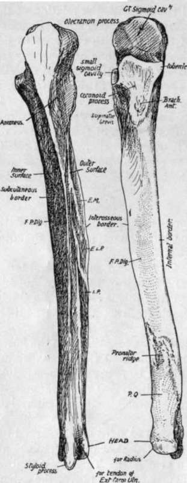

Ulna And Radius
Description
This section is from the book "The Anatomy Of The Human Skeleton", by J. Ernest Frazer. Also available from Amazon: The anatomy of the human skeleton.
Ulna And Radius
These two bones, connected by an interosseous membrane, constitute the skeleton of the forearm. They articulate with the humerus above and carry the hand below. The ulna is the inner bone, and forms the main articulation with the humerus, while the radius, placed on its outer side, can rotate its broadened lower end round the ulna in supination and pronation, and articulates directly with the carpus at the wrist: the ulna is only connected with the carpus by ligaments.
Thus the hand is carried by the radius and moves with it.
Ulna
This has a shaft, an upper end, and a lower end or head. The upper end is its thickest part, and presents a deep notch, the great sigmoid cavity, that receives the trochlea of the humerus : it is walled behind by the hook-like olecranon process, and in front and below by the smaller coronoid process. On the outer side of the coronoid process is the lesser sigmoid cavity, which receives the head of the radius : a triangular area below this has a sharp posterior margin for origin of Supinator brevis. The coronoid process is prolonged downwards in front, having inner and outer margins enclosing a rough tuberosity for insertion of Brachialis anticus : the margins give origin to muscles, the inner has a prominent tubercle at its upper end for internal lateral ligament and Flexor sublimis, and the outer reaches the front margin of the lesser sigmoid cavity above, where the orbicular hgament is fastened.
The shaft has a prominent sharp outer or interosseous border, a well-marked sinuous posterior or subcutaneous border, and a badly-marked rounded inner border. These separate three surfaces : the internal and anterior surfaces are continuous and afford origin to Flexor profundus digitorum, but the postero-external surface is sharply defined by the interosseous and subcutaneous borders, and shows markings for some of the deep extensor muscles. The lower fourth of the front surface is marked off from the rest by an obhque rough line, the pronator ridge, and gives origin to Pronator quadratus.
The lower end or head is slightly enlarged, has a smooth articular surface on its rounded periphery, externally and in front, for the radius, a prominent styloid process for internal lateral ligament of wrist, behind, below, and internally, and a smooth articular surface external to this, on the lower surface of the head, that is continuous with the outer surface and articulates with the triangular fibro-cartilage : a groove on the back, between the head and the styloid process, is for the tendon of Extensor carpi ulnaris : a notch on the radial side of the base of the process is for the attachment of the apex of the fibro-cartilage. The shaft tapers from above, and is cylindrical in its lower part : it is concave forwards, especially in the upper half or so.
Fig. 70.-Right ulna. F.P. dig. origin of Flex. prof. dig. ; E.M., E.L.P., I.P. origins of Ext. ossis met., Ext. Long, poll., and Ext. indicis ; P.Q. origin of Pronator quadratus. To tell right from left, hold the bone so that the olecranon is above and behind, and the small sigmoid cavity (for the radius) on the outer side.
Radius
This bone increases in size from above down, is somewhat concave in front, and decidedly concave internally, so that a broad area is provided in the middle of the forearm, by it and the ulna and the interosseous membrane, for the origin of muscles. It presents an upper end or head, a shaft, and a lower end. The head is like a thick disc, with a concave articular surface above for the capitulum of the humerus, and a peripheral articular surface for the lesser sigmoid cavity of the ulna and the orbicular ligament which surrounds it and holds it in this cavity. The head is connected by the narrow neck with the shaft, and this bears, just below the neck and on the inner side, the tubercle for the insertion of the Biceps : here the shaft is somewhat cylindrical, giving insertion externally, in front, and behind to Supinator brevis, and this area is hmited in front and behind by anterior and posterior oblique lines: Flexor sublimis arises from the anterior line. On the outer and back surface, where these lines approach each other, and about half-way down, is a rough Pronator teres impression. Below the oblique line the shaft has a hollowed anterior surface for origin of Flexor longus pollicis, bounded internally by the interosseous border, externally by the outer border continuous with the anterior obhque hne, and below by a pronator ridge and a quadrate surface, comparable with that on the ulna, for Pronator quadratus. The posterior surface is rounded from side to side, and shows markings for Extensor ossis metacarpi pollicis and Ext. brevis pollicis near the interosseous border. Lower down this posterior surface widens into the lower end, and here presents grooves for tendons. The lower end is enlarged by the addition of a mass on its outer side, which projects down in the styloid process, for the external lateral ligament. As a result the lower end has an outer surface on the styloid process for thumb extensor tendons, a postero-external behind it, carrying the radial extensor tendons, a posterior internal to this, marked by an oblique groove for Ext. longus pollicis, and a broad and shallow one for the common and index extensors ; an internal, carrying a concave sigmoid cavity (which plays round the head of the ulna) on its lower part and a non-articular triangular area above this, where some fibres of Pronator quadratus are inserted : also an anterior rough for ligamentous attachments, and an inferior, which articulates with the carpus. The articular surface on the inner side is not continuous with that below, being separated from it in the recent state by the attachment of the base of the triangular fibro-cartilage to the intervening border.
Continue to: